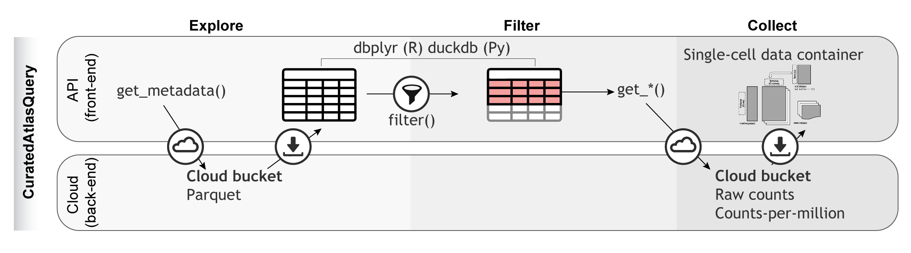

The Human Cell Atlas (HCA) is a large project that aims to learn from and map every cell type in the human body. The project extracts spatial and molecular characteristics in order to understand cellular function and networks. It is an international collaborative that charts healthy cells in the human body at all ages. There are about 37.2 trillion cells in the human body. To read more about the project, head over to their website at https://www.humancellatlas.org.
To systematically characterise the immune system across tissues, demographics and multiple studies, we harmonised single cell transcriptomics data from the CELLxGENE database. We collected 28,975,366 cells, spanning 156 tissues (excluding cell cultures), 12,981 samples and 324 studies (Figure 1A). We standardised metadata, including sample identifiers, tissue labels (grouping them to 45 based on anatomy; Figure 1A) and age. Also, we harmonised the gene-transcript abundance of all samples, putting values on the positive natural scale (i.e. non-logarithmic).
The resulting database constitutes a comprehensive resource that facilitates large-scale studies of human biology at the single-cell level across human developmental stages and demographic groups.
To model the immune system across studies, we adopted a consistent immune cell-type ontology appropriate for lymphoid and non-lymphoid tissues. We applied a consensus cell labelling strategy to minimise biases in immune cell classification from study-specific standards.
To support data access and programmatic exploration of the harmonised atlas, we developed CuratedAtlasQuery (Figure 2J). This interface allows the programmatic exploration of our harmonised database. Cells of interest can be selected based on their ontology, tissue of origin, demographics and disease. For example, the user can select CD4 T helper cells across lymphoid tissues in health and diseases, including COVID-19. The data for the selected cells can be downloaded locally into popular single-cell data containers. Pseudobulk counts are also available to facilitate large-scale, summary analyses of transcriptional profiles. This platform offers a standardised workflow for accessing atlas-level datasets programmatically and reproducibly.

There are a few options to access single cell data with R / Bioconductor.
| Package | Target | Description |
|---|---|---|
| hca | HCA Data Portal API | Project, Sample, and File level HCA data |
| cellxgenedp | CellxGene | Human and mouse SC data including HCA |
| CuratedAtlasQueryR | CellxGene | fine-grained query capable CELLxGENE data including HCA |
if (!requireNamespace("BiocManager", quietly = TRUE))
install.packages("BiocManager")
BiocManager::install("CuratedAtlasQueryR")## 'getOption("repos")' replaces Bioconductor standard repositories, see
## 'help("repositories", package = "BiocManager")' for details.
## Replacement repositories:
## CRAN: https://cloud.r-project.org## Bioconductor version 3.17 (BiocManager 1.30.20), R 4.3.0 Patched (2023-04-21
## r84297)## Warning: package(s) not installed when version(s) same as or greater than current; use
## `force = TRUE` to re-install: 'CuratedAtlasQueryR'The metadata allows the user to get a lay of the land of what is available via the package.
metadata <- get_metadata()For each distinct tissue and dataset combination, count the number of datasets by tissue type.
## # Source: SQL [?? x 2]
## # Database: DuckDB 0.7.1 [unknown@Linux 5.15.0-1035-azure:R 4.3.0/:memory:]
## tissue n
## <chr> <dbl>
## 1 peripheral zone of prostate 10
## 2 transition zone of prostate 10
## 3 blood 47
## 4 intestine 18
## 5 middle temporal gyrus 24
## 6 heart left ventricle 46
## 7 apex of heart 16
## 8 heart right ventricle 16
## 9 left cardiac atrium 7
## 10 interventricular septum 16
## # ℹ more rows## [1] "cell_" "sample_"
## [3] "cell_type" "cell_type_harmonised"
## [5] "confidence_class" "cell_annotation_azimuth_l2"
## [7] "cell_annotation_blueprint_singler" "cell_annotation_monaco_singler"
## [9] "sample_id_db" "_sample_name"
single_cell_counts <-
metadata |>
dplyr::filter(
ethnicity == "African" &
stringr::str_like(assay, "%10x%") &
tissue == "lung parenchyma" &
stringr::str_like(cell_type, "%CD4%")
) |>
get_SingleCellExperiment()## ! This function name is deprecated. Please use `get_single_cell_experiment()` instead## ℹ Realising metadata.## ℹ Synchronising files## ℹ Downloading 0 files, totalling 0 GB## ℹ Reading files.## ℹ Compiling Single Cell Experiment.
single_cell_counts## class: SingleCellExperiment
## dim: 36229 1571
## metadata(0):
## assays(1): counts
## rownames(36229): A1BG A1BG-AS1 ... ZZEF1 ZZZ3
## rowData names(0):
## colnames(1571): ACAGCCGGTCCGTTAA_F02526_1 GGGAATGAGCCCAGCT_F02526_1 ...
## TACAACGTCAGCATTG_SC84_1 CATTCGCTCAATACCG_F02526_1
## colData names(56): sample_ cell_type ... updated_at_y original_cell_id
## reducedDimNames(0):
## mainExpName: NULL
## altExpNames(0):This is helpful if just few genes are of interest, as they can be compared across samples.
metadata |>
dplyr::filter(
ethnicity == "African" &
stringr::str_like(assay, "%10x%") &
tissue == "lung parenchyma" &
stringr::str_like(cell_type, "%CD4%")
) |>
get_SingleCellExperiment(assays = "cpm")## ! This function name is deprecated. Please use `get_single_cell_experiment()` instead## ℹ Realising metadata.## ℹ Synchronising files## ℹ Downloading 0 files, totalling 0 GB## ℹ Reading files.## ℹ Compiling Single Cell Experiment.## class: SingleCellExperiment
## dim: 36229 1571
## metadata(0):
## assays(1): cpm
## rownames(36229): A1BG A1BG-AS1 ... ZZEF1 ZZZ3
## rowData names(0):
## colnames(1571): ACAGCCGGTCCGTTAA_F02526_1 GGGAATGAGCCCAGCT_F02526_1 ...
## TACAACGTCAGCATTG_SC84_1 CATTCGCTCAATACCG_F02526_1
## colData names(56): sample_ cell_type ... updated_at_y original_cell_id
## reducedDimNames(0):
## mainExpName: NULL
## altExpNames(0):
single_cell_counts <-
metadata |>
dplyr::filter(
ethnicity == "African" &
stringr::str_like(assay, "%10x%") &
tissue == "lung parenchyma" &
stringr::str_like(cell_type, "%CD4%")
) |>
get_SingleCellExperiment(assays = "cpm", features = "PUM1")## ! This function name is deprecated. Please use `get_single_cell_experiment()` instead## ℹ Realising metadata.## ℹ Synchronising files## ℹ Downloading 0 files, totalling 0 GB## ℹ Reading files.## ℹ Compiling Single Cell Experiment.
single_cell_counts## class: SingleCellExperiment
## dim: 1 1571
## metadata(0):
## assays(1): cpm
## rownames(1): PUM1
## rowData names(0):
## colnames(1571): ACAGCCGGTCCGTTAA_F02526_1 GGGAATGAGCCCAGCT_F02526_1 ...
## TACAACGTCAGCATTG_SC84_1 CATTCGCTCAATACCG_F02526_1
## colData names(56): sample_ cell_type ... updated_at_y original_cell_id
## reducedDimNames(0):
## mainExpName: NULL
## altExpNames(0):If needed, the H5 SingleCellExperiment can be converted
into a Seurat object. Note that it may take a long time and use a lot of
memory depending on how many cells you are requesting.
single_cell_counts <-
metadata |>
dplyr::filter(
ethnicity == "African" &
stringr::str_like(assay, "%10x%") &
tissue == "lung parenchyma" &
stringr::str_like(cell_type, "%CD4%")
) |>
get_seurat()
single_cell_counts